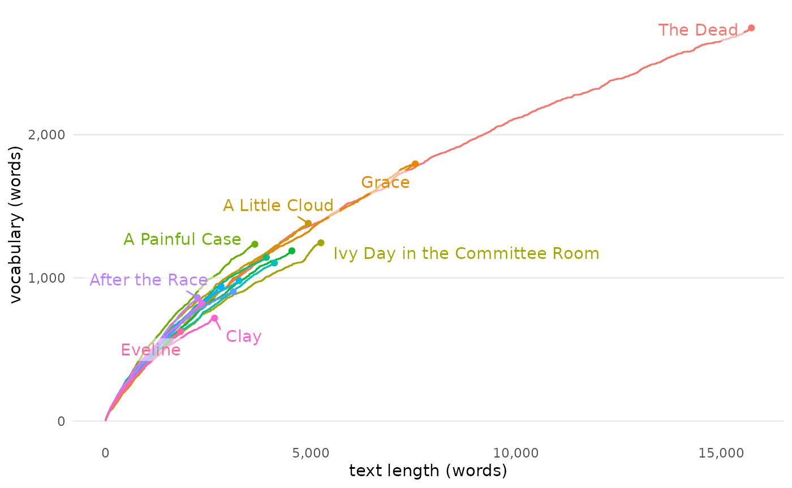
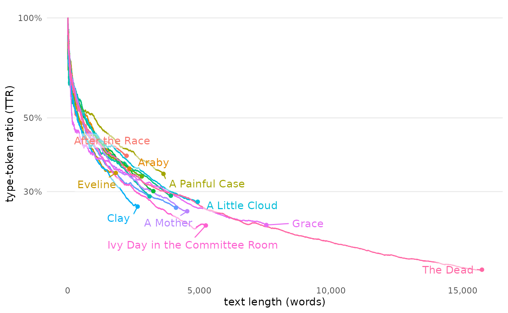
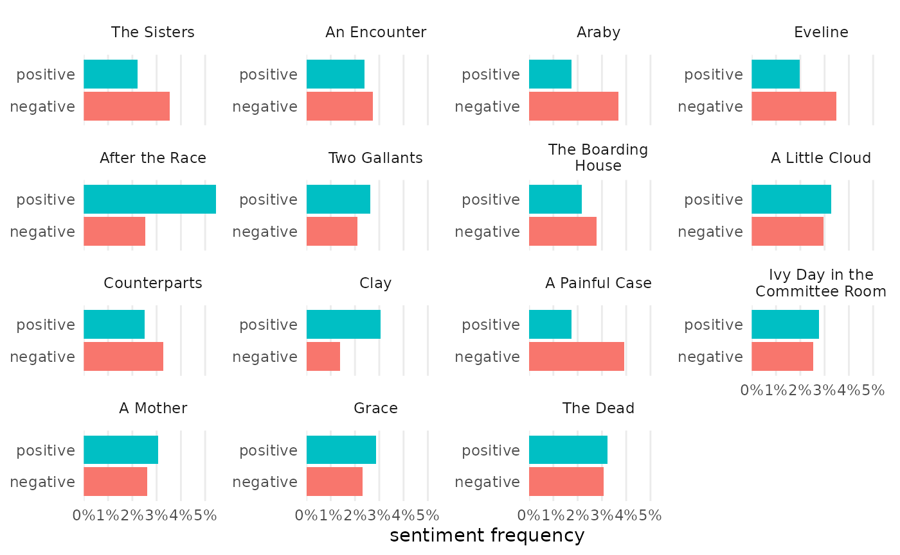
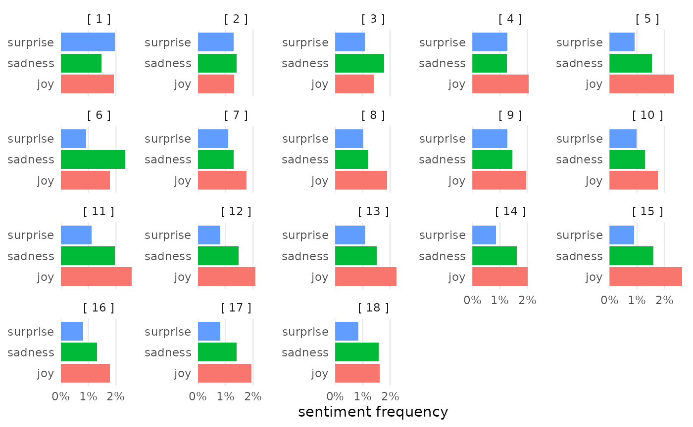
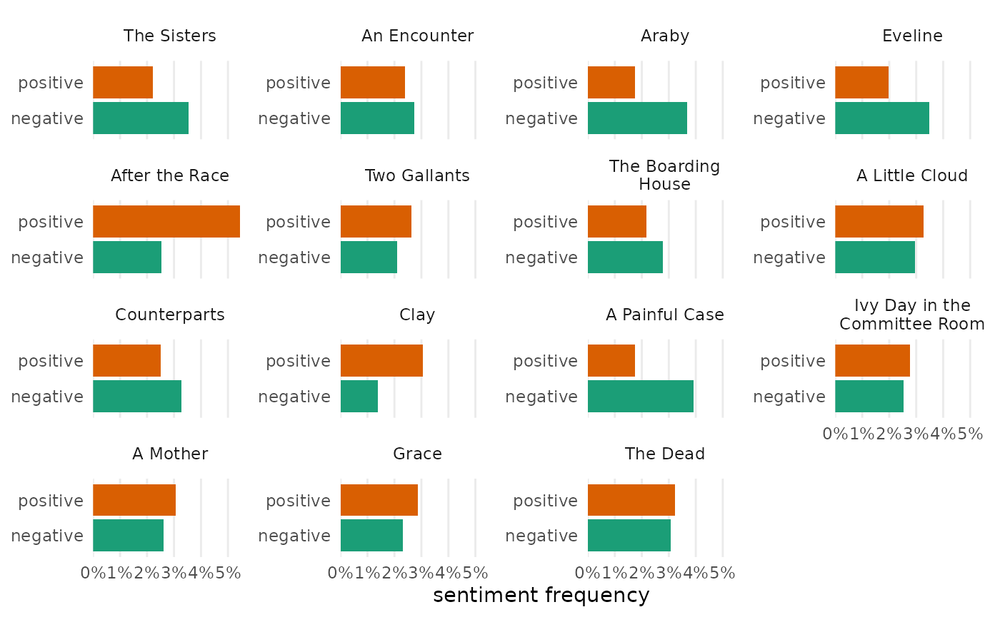
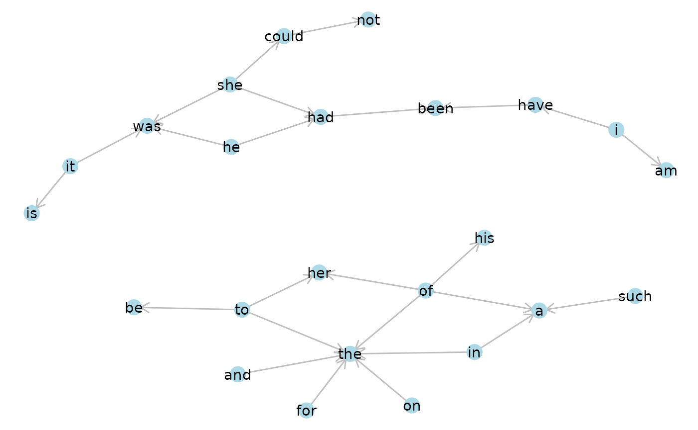
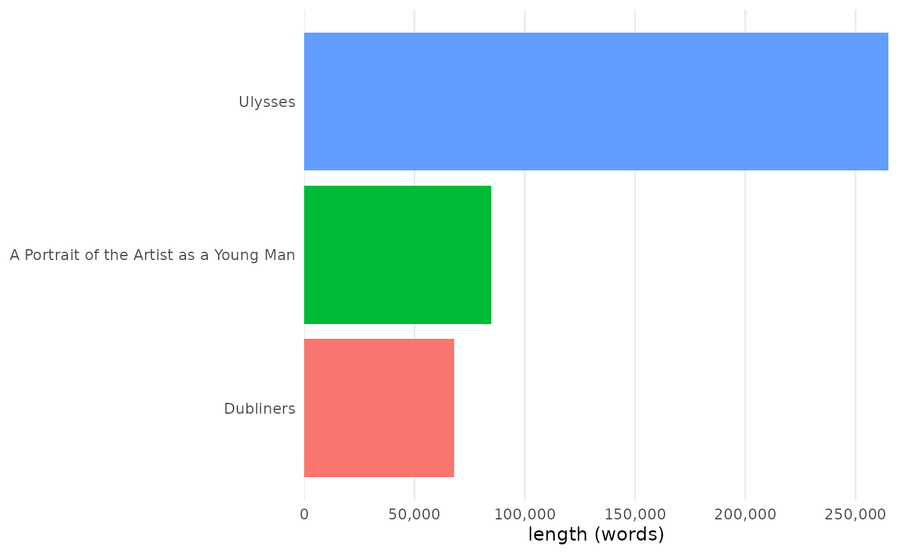
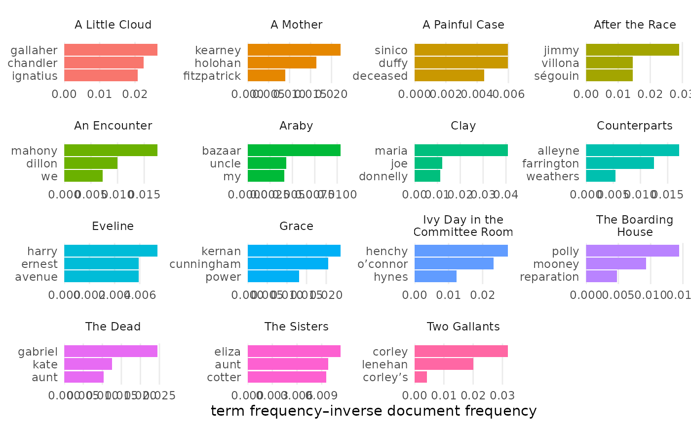

Working with text as data is a multi-step process. One of the first steps involves figuring out which texts you’d like to study and gathering them in one place. After this, you’ll still need to load them in some structured way before anything else. Only then is it possible to “do text analysis”: tagging parts of speech, normalizing by lemma, comparing features, measuring sentiment, and so on. But even after doing the work, you’ll need to communicate findings by preparing compelling explanations, visualizations, and tables.
The tmtyro package aims to make these steps fast and easy.
- Purpose-built functions for collecting a corpus let you focus on what instead of how.
- Scalable functions for loading a corpus provide room for growth, from simple word count to grammar parsing and lemmatizing.
- Additional functions standardize approaches for measuring word use and vocabulary uniqueness, detecting sentiment, assessing term frequency–inverse document frequency, working with n-grams, and even building topic models.
- One simple visualizing function manages most use cases, returning clean, publication-ready figures. Additional functions and arguments make it easy to customize output to suit your need.
- One simple function prepares publication-ready tables, automatically adjusting based on the kind of data used.
- Every function is offered as a verb using complementary syntax. This keeps workflows easy to build, easy to understand, and easy to explain.
This vignette will introduce tmtyro’s goals and use.
Differentiating tmtyro
Wonderful text mining tools already exist for digital humanities classrooms and researchers working with text data, including the online tool Voyant, which is both powerful and easy to use for beginners; the tm package in R, a long-standing tool used by specialists; and the comparatively recent tidytext package in R, designed to work with the “tidyverse” suite of packages. Their designs situate them for different audiences and purposes, but each is limited in part by lock-in or difficulty. The tmtyro package aims to address these shortcomings.
Voyant’s graphical interface makes it accessible to complete novices, but it doesn’t skimp on power or features. Still, every tool has limits. The tool’s easy-to-use interface ultimately limits users, since it keeps Voyant from serving as a skills ramp to other tools.
Unlike Voyant, code-based methods for working with text offer both reproducibility and open-ended tooling. In R, the tidytext package is made using a “tidy data” design philosophy that is consistent with many popular R packages. A companion book, Text Mining with R, offers wonderful documentation to the package, and it does ease the shock for anyone new to text mining. But its preface acknowledges a starting point quite a ways above zero, assuming “that the reader is at least slightly familiar with dplyr, ggplot2, and the %>% ‘pipe’ operator in R.” Without the book, tidytext is even less suited for beginners, leaving users to fend for themselves with no workflow to read files.
An R user might pick up tidytext as an added tool in a toolbox. The tm package, by contrast, is the kind of tool for which specialists will learn R to use. It predates the tidyverse packages, and its data design is often incompatible with those workflows.

The tmtyro package is designed to fit in the gap between these tools. Like Voyant, it is designed for a beginner. A code-based interface can never be as intuitive as one designed graphically, but tmtyro makes decisions that strive for consistency and predictability. Workflows are provided for loading texts from a folder or for getting a corpus of texts from an online repository like Project Gutenberg. Once texts are loaded, repetitive conventions for function names make it easy to add columns for assessing sentiment, for considering n-grams, or for measuring vocabulary. Generic functions handle the details for sharing figures and tables, automatically adjusting to fit the steps taken in a given analysis.
More importantly, tmtyro provides a skills ramp for users who outgrow it. A student who gains confidence in the methods provided by the package might decide to tweak a visualization using functions from ggplot2. A researcher wishing to work with a subset of titles will begin to understand methods from dplyr. And since tmtyro’s data design is based on that of tidytext, a user can easily use the packages interchangeably. Some functions will remain useful even as a user can no longer reasonably be called a “tyro”.
Collect a corpus
Collecting texts from Project Gutenberg will be a common first step
for many who work with text. The function
get_gutenberg_corpus() does the job.1 All it needs is the
Gutenberg ID number, found in the book’s URL. The resulting table will
include columns for Gutenberg ID, title, author, headers such as those
used for chapters, and text:
library(tmtyro)
joyce <- get_gutenberg_corpus(c(2814, 4217))
head(joyce)
#> # A tibble: 6 × 5
#> gutenberg_id title author part text
#> <int> <chr> <chr> <chr> <chr>
#> 1 2814 Dubliners Joyce, James THE SISTERS There was no hope for him thi…
#> 2 2814 Dubliners Joyce, James THE SISTERS Old Cotter was sitting at the…
#> 3 2814 Dubliners Joyce, James THE SISTERS “No, I wouldn’t say he was ex…
#> 4 2814 Dubliners Joyce, James THE SISTERS He began to puff at his pipe,…
#> 5 2814 Dubliners Joyce, James THE SISTERS “I have my own theory about i…
#> 6 2814 Dubliners Joyce, James THE SISTERS He began to puff again at his…In some cases, headers may make better sense if read as part of the
text. These can be corrected with
move_header_to_text().
ulysses <- get_gutenberg_corpus(4300)
# dplyr is used here to choose a smaller example for comparison
ulysses_II_7 <- ulysses |>
dplyr::filter(part == "— II —",
section == "[ 7 ]")
ulysses_II_7 |>
head()
#> # A tibble: 6 × 7
#> gutenberg_id title author part section subsection text
#> <int> <chr> <chr> <chr> <chr> <chr> <chr>
#> 1 4300 Ulysses Joyce, James — II — [ 7 ] IN THE HEART OF THE HI… Befo…
#> 2 4300 Ulysses Joyce, James — II — [ 7 ] IN THE HEART OF THE HI… —Rat…
#> 3 4300 Ulysses Joyce, James — II — [ 7 ] IN THE HEART OF THE HI… —Com…
#> 4 4300 Ulysses Joyce, James — II — [ 7 ] IN THE HEART OF THE HI… Righ…
#> 5 4300 Ulysses Joyce, James — II — [ 7 ] IN THE HEART OF THE HI… —Sta…
#> 6 4300 Ulysses Joyce, James — II — [ 7 ] THE WEARER OF THE CROWN Unde…
ulysses_II_7 |>
move_header_to_text(subsection) |>
head(10)
#> # A tibble: 10 × 6
#> gutenberg_id title author part section text
#> <int> <chr> <chr> <chr> <chr> <chr>
#> 1 4300 Ulysses Joyce, James — II — [ 7 ] IN THE HEART OF THE HIBERNI…
#> 2 4300 Ulysses Joyce, James — II — [ 7 ] Before Nelson’s pillar tram…
#> 3 4300 Ulysses Joyce, James — II — [ 7 ] —Rathgar and Terenure!
#> 4 4300 Ulysses Joyce, James — II — [ 7 ] —Come on, Sandymount Green!
#> 5 4300 Ulysses Joyce, James — II — [ 7 ] Right and left parallel cla…
#> 6 4300 Ulysses Joyce, James — II — [ 7 ] —Start, Palmerston Park!
#> 7 4300 Ulysses Joyce, James — II — [ 7 ] THE WEARER OF THE CROWN
#> 8 4300 Ulysses Joyce, James — II — [ 7 ] Under the porch of the gene…
#> 9 4300 Ulysses Joyce, James — II — [ 7 ] GENTLEMEN OF THE PRESS
#> 10 4300 Ulysses Joyce, James — II — [ 7 ] Grossbooted draymen rolled …Prepare a corpus
Loading texts
If a files are already collected in a folder on disk, they can be
loaded using load_texts(). When loaded this way, the first
part of the file name populates the doc_id column:
corpus_austen <- load_texts("austen/")
unique(corpus_austen$doc_id)
#> [1] "emma" "lady_susan" "mansfield_park"
#> [4] "northanger" "persuasion" "pride_and_prejudice"
#> [7] "sense_and_sensibility"
head(corpus_austen)
#> # A tibble: 6 × 3
#> doc_id par_num word
#> <chr> <dbl> <chr>
#> 1 emma 1 volume
#> 2 emma 1 i
#> 3 emma 2 chapter
#> 4 emma 2 i
#> 5 emma 3 emma
#> 6 emma 3 woodhouseStandardizing titles
The standardize_titles() function makes it easy to
convert titles to something cleaner:
corpus_austen <- corpus_austen |>
standardize_titles()
unique(corpus_austen$doc_id)
#> [1] "Emma" "Lady Susan" "Mansfield Park"
#> [4] "Northanger" "Persuasion" "Pride and Prejudice"
#> [7] "Sense and Sensibility"The same load_texts() function will prepare a corpus
from Project Gutenberg in this format of one word per row, using the
Project Gutenberg ID as the document identifier.
corpus_joyce <- joyce |>
load_texts()
head(corpus_joyce)
#> # A tibble: 6 × 5
#> doc_id title author part word
#> <int> <chr> <chr> <chr> <chr>
#> 1 2814 Dubliners Joyce, James THE SISTERS there
#> 2 2814 Dubliners Joyce, James THE SISTERS was
#> 3 2814 Dubliners Joyce, James THE SISTERS no
#> 4 2814 Dubliners Joyce, James THE SISTERS hope
#> 5 2814 Dubliners Joyce, James THE SISTERS for
#> 6 2814 Dubliners Joyce, James THE SISTERS himUsing another column for doc_id
If a document’s title is preferred over the gutenberg_id, the
identify_by() function makes the switch:
corpus_joyce <- joyce |>
load_texts() |>
identify_by(title)
head(corpus_joyce)
#> # A tibble: 6 × 4
#> doc_id author part word
#> <fct> <chr> <chr> <chr>
#> 1 Dubliners Joyce, James THE SISTERS there
#> 2 Dubliners Joyce, James THE SISTERS was
#> 3 Dubliners Joyce, James THE SISTERS no
#> 4 Dubliners Joyce, James THE SISTERS hope
#> 5 Dubliners Joyce, James THE SISTERS for
#> 6 Dubliners Joyce, James THE SISTERS himThe process is the same when comparing the chapters or stories in a collection of works. Just use another column like “part” as the document identifier:
corpus_dubliners <- get_gutenberg_corpus(2814) |>
load_texts() |>
identify_by(part) |>
standardize_titles(drop_articles = FALSE)
head(corpus_dubliners)
#> # A tibble: 6 × 4
#> title author doc_id word
#> <chr> <chr> <chr> <chr>
#> 1 Dubliners Joyce, James The Sisters there
#> 2 Dubliners Joyce, James The Sisters was
#> 3 Dubliners Joyce, James The Sisters no
#> 4 Dubliners Joyce, James The Sisters hope
#> 5 Dubliners Joyce, James The Sisters for
#> 6 Dubliners Joyce, James The Sisters himStudy features
Functions that follow similar naming conventions simplify the task of analyzing texts. At the same time, generic functions for visualizing and preparing tables adapt for each kind of study.
Vocabulary richness
The add_vocabulary() function adds measurements of
vocabulary richness
vocab_dubliners <-
corpus_dubliners |>
add_vocabulary()
vocab_dubliners |>
head(10)
#> # A tibble: 10 × 11
#> title author doc_id word new_word hapax vocabulary ttr htr
#> <chr> <chr> <chr> <chr> <lgl> <lgl> <int> <dbl> <dbl>
#> 1 Dubliners Joyce, James The Siste… there TRUE FALSE 1 1 0
#> 2 Dubliners Joyce, James The Siste… was TRUE FALSE 2 1 0
#> 3 Dubliners Joyce, James The Siste… no TRUE FALSE 3 1 0
#> 4 Dubliners Joyce, James The Siste… hope TRUE TRUE 4 1 0.25
#> 5 Dubliners Joyce, James The Siste… for TRUE FALSE 5 1 0.2
#> 6 Dubliners Joyce, James The Siste… him TRUE FALSE 6 1 0.167
#> 7 Dubliners Joyce, James The Siste… this TRUE FALSE 7 1 0.143
#> 8 Dubliners Joyce, James The Siste… time TRUE FALSE 8 1 0.125
#> 9 Dubliners Joyce, James The Siste… it TRUE FALSE 9 1 0.111
#> 10 Dubliners Joyce, James The Siste… was FALSE FALSE 9 0.9 0.1
#> # ℹ 2 more variables: progress_words <int>, progress_percent <dbl>Preparing a table
For vocabulary richness, tabulize() returns a summary of
one row per document:
vocab_dubliners |>
tabulize()| length | vocabulary | hapax | |||
|---|---|---|---|---|---|
| total | ratio | total | ratio | ||
| The Sisters | 3,113 | 903 | 0.290 | 552 | 0.177 |
| An Encounter | 3,257 | 980 | 0.301 | 620 | 0.190 |
| Araby | 2,345 | 825 | 0.352 | 560 | 0.239 |
| Eveline | 1,831 | 625 | 0.341 | 407 | 0.222 |
| After the Race | 2,242 | 862 | 0.384 | 623 | 0.278 |
| Two Gallants | 3,921 | 1,143 | 0.292 | 735 | 0.187 |
| The Boarding House | 2,818 | 939 | 0.333 | 633 | 0.225 |
| A Little Cloud | 4,941 | 1,381 | 0.279 | 873 | 0.177 |
| Counterparts | 4,116 | 1,104 | 0.268 | 644 | 0.156 |
| Clay | 2,659 | 719 | 0.270 | 411 | 0.155 |
| A Painful Case | 3,641 | 1,235 | 0.339 | 840 | 0.231 |
| Ivy Day in the Committee Room | 5,249 | 1,245 | 0.237 | 742 | 0.141 |
| A Mother | 4,542 | 1,189 | 0.262 | 762 | 0.168 |
| Grace | 7,547 | 1,796 | 0.238 | 1,112 | 0.147 |
| The Dead | 15,731 | 2,746 | 0.175 | 1,557 | 0.099 |
Preparing a figure
The visualize() function supports a few types of
figures. By default, it charts each document by its length and the
number of unique tokens. A figure like this is useful to compare
styles.
vocab_dubliners |>
visualize()
Other features, such as type-token ratio, hapax-token ratio, or a sampling of hapax legomena can also be shown:
vocab_dubliners |>
visualize("ttr")
Sentiment
Similarly, the add_sentiment() function adds
measurements of sentiment.
sentiment_dubliners <- corpus_dubliners |>
add_sentiment()
sentiment_dubliners |>
head()#> # A tibble: 6 × 5
#> title author doc_id word sentiment
#> <chr> <chr> <chr> <chr> <chr>
#> 1 Dubliners Joyce, James The Sisters there NA
#> 2 Dubliners Joyce, James The Sisters was NA
#> 3 Dubliners Joyce, James The Sisters no NA
#> 4 Dubliners Joyce, James The Sisters hope NA
#> 5 Dubliners Joyce, James The Sisters for NA
#> 6 Dubliners Joyce, James The Sisters him NADropping empty rows
Since many words may not be found in a given sentiment lexicon, the
drop_empty() function makes it easy to remove empty
rows:
sentiment_dubliners |>
drop_empty() |>
head()
#> # A tibble: 6 × 5
#> title author doc_id word sentiment
#> <chr> <chr> <chr> <chr> <chr>
#> 1 Dubliners Joyce, James The Sisters evenly positive
#> 2 Dubliners Joyce, James The Sisters dead negative
#> 3 Dubliners Joyce, James The Sisters darkened negative
#> 4 Dubliners Joyce, James The Sisters blind negative
#> 5 Dubliners Joyce, James The Sisters idle negative
#> 6 Dubliners Joyce, James The Sisters strangely negativeChoosing sentiment lexicon
The lexicon can be chosen at measurement:
sentiment_ulysses <- ulysses |>
move_header_to_text(subsection) |>
load_texts() |>
identify_by(section) |>
add_sentiment(lexicon = "nrc")
sentiment_ulysses |>
drop_empty() |>
head(10)#> # A tibble: 10 × 6
#> title author part doc_id word sentiment
#> <chr> <chr> <chr> <fct> <chr> <chr>
#> 1 Ulysses Joyce, James — I — [ 1 ] stately positive
#> 2 Ulysses Joyce, James — I — [ 1 ] plump anticipation
#> 3 Ulysses Joyce, James — I — [ 1 ] buck fear
#> 4 Ulysses Joyce, James — I — [ 1 ] buck negative
#> 5 Ulysses Joyce, James — I — [ 1 ] buck positive
#> 6 Ulysses Joyce, James — I — [ 1 ] buck surprise
#> 7 Ulysses Joyce, James — I — [ 1 ] razor fear
#> 8 Ulysses Joyce, James — I — [ 1 ] dark sadness
#> 9 Ulysses Joyce, James — I — [ 1 ] fearful fear
#> 10 Ulysses Joyce, James — I — [ 1 ] fearful negativePreparing a table
For sentiment richness, tabulize() returns a summary of
figures for each document:
sentiment_dubliners_part <- sentiment_dubliners |>
dplyr::filter(doc_id %in% c("The Sisters", "An Encounter", "Araby"))
sentiment_dubliners_part |>
tabulize()| sentiment | n | % | |
|---|---|---|---|
| The Sisters | negative | 110 | 3.53 |
| positive | 69 | 2.22 | |
| — | 2,934 | 94.25 | |
| An Encounter | negative | 89 | 2.73 |
| positive | 78 | 2.39 | |
| — | 3,090 | 94.87 | |
| Araby | negative | 86 | 3.67 |
| positive | 41 | 1.75 | |
| — | 2,218 | 94.58 |
Setting drop_na to TRUE will remove rows
showing counts and percentages of words without sentiment measure:
sentiment_dubliners_part |>
tabulize(drop_na = TRUE)| sentiment | n | % | |
|---|---|---|---|
| The Sisters | negative | 110 | 61.45 |
| positive | 69 | 38.55 | |
| An Encounter | negative | 89 | 53.29 |
| positive | 78 | 46.71 | |
| Araby | negative | 86 | 67.72 |
| positive | 41 | 32.28 |
The ignore parameter aids in selecting a subset of
sentiments:
sentiment_ulysses_part <- sentiment_ulysses |>
dplyr::filter(doc_id %in% c("[ 1 ]", "[ 2 ]", "[ 3 ]"))
sentiment_ulysses_part |>
tabulize(ignore = c("anger", "anticipation", "disgust", "fear", "trust", "positive", "negative"))| sentiment | n | % | |
|---|---|---|---|
| [ 1 ] | joy | 161 | 1.93 |
| sadness | 124 | 1.48 | |
| surprise | 164 | 1.96 | |
| — | 7,910 | 94.63 | |
| [ 2 ] | joy | 65 | 1.32 |
| sadness | 69 | 1.40 | |
| surprise | 64 | 1.30 | |
| — | 4,735 | 95.99 | |
| [ 3 ] | joy | 89 | 1.40 |
| sadness | 114 | 1.79 | |
| surprise | 69 | 1.08 | |
| — | 6,104 | 95.73 |
Preparing a figure
The visualize() function allows for comparison among
documents in a set:
sentiment_dubliners |>
visualize()
sentiment_ulysses |>
visualize(ignore = c("anger", "anticipation", "disgust", "fear", "trust", "positive", "negative"))
Changing colors
For nearly every visualization type, the change_colors()
function does what its name implies. By default, it adopts the “Dark2”
palette from Brewer:
sentiment_dubliners |>
visualize() |>
change_colors()
N-grams
Following the pattern already established, add_ngrams()
adds columns for n-length phrases of words:
bigrams_austen <- corpus_austen |>
add_ngrams()
bigrams_austen |>
head()
#> # A tibble: 6 × 4
#> doc_id par_num word_1 word_2
#> <chr> <dbl> <chr> <chr>
#> 1 Emma 1 volume i
#> 2 Emma 1 i chapter
#> 3 Emma 2 chapter i
#> 4 Emma 2 i emma
#> 5 Emma 3 emma woodhouse
#> 6 Emma 3 woodhouse handsome
trigrams_austen <- corpus_austen |>
add_ngrams(1:3)
trigrams_austen |>
head()
#> # A tibble: 6 × 5
#> doc_id par_num word_1 word_2 word_3
#> <chr> <dbl> <chr> <chr> <chr>
#> 1 Emma 1 volume i chapter
#> 2 Emma 1 i chapter i
#> 3 Emma 2 chapter i emma
#> 4 Emma 2 i emma woodhouse
#> 5 Emma 3 emma woodhouse handsome
#> 6 Emma 3 woodhouse handsome cleverPreparing a table
The tabulize() function returns the top n-grams per
document. By default, the first six are shown, but rows can be chosen
freely:
bigrams_austen |>
tabulize(rows = 1:2)| ngram | n | % | |
|---|---|---|---|
| Mansfield Park | of the | 748 | 0.47 |
| to be | 643 | 0.40 | |
| Emma | to be | 607 | 0.38 |
| of the | 566 | 0.35 | |
| Pride and Prejudice | of the | 460 | 0.38 |
| to be | 438 | 0.36 | |
| Sense and Sensibility | to be | 436 | 0.36 |
| of the | 432 | 0.36 | |
| Persuasion | of the | 429 | 0.51 |
| to be | 378 | 0.45 | |
| Northanger | of the | 379 | 0.49 |
| to be | 280 | 0.36 | |
| Lady Susan | i am | 117 | 0.51 |
| i have | 88 | 0.38 |
Preparing a figure
The visualize() function returns a network visualization
demonstrated in the Tidytext book:
bigrams_austen |>
visualize()
Combining n-grams
N-gram frequencies can be compared by combining them before visualization. Certain arguments allow for deviation from typical charts, including choosing the number of ngrams to chart and modifying colors to be set by values on the Y-axis.
bigrams_austen |>
combine_ngrams() |>
visualize(rows = 1:2, color_y = TRUE) |>
change_colors("okabe")
Term frequency–inverse document frequency
Unlike other measurements, term frequency–inverse document frequency
doesn’t preserve word order, and it reduces documents to one instance of
each token. Since any use of tf-idf can’t merely add a column,
summarize_tf_idf() avoids the add_ naming
convention. Results are returned in in descending strength of
tf-idf:
tfidf_doubliners <- corpus_dubliners |>
summarize_tf_idf()
tfidf_doubliners |>
head()
#> # A tibble: 6 × 6
#> doc_id word n tf idf tf_idf
#> <chr> <chr> <int> <dbl> <dbl> <dbl>
#> 1 Clay maria 40 0.0150 2.71 0.0407
#> 2 Two Gallants corley 46 0.0117 2.71 0.0318
#> 3 After the Race jimmy 24 0.0107 2.71 0.0290
#> 4 Ivy Day in the Committee Room henchy 53 0.0101 2.71 0.0273
#> 5 A Little Cloud gallaher 48 0.00971 2.71 0.0263
#> 6 The Dead gabriel 142 0.00903 2.71 0.0244Preparing a table
The tabulize() function returns a number of rows, which
can be specified:
tfidf_doubliners |>
tabulize(rows = 1:3)| word | n | tf | idf | tf_idf | |
|---|---|---|---|---|---|
| A Little Cloud | gallaher | 48 | 0.00971 | 2.70805 | 0.02631 |
| chandler | 41 | 0.00830 | 2.70805 | 0.02247 | |
| ignatius | 38 | 0.00769 | 2.70805 | 0.02083 | |
| A Mother | kearney | 50 | 0.01101 | 2.01490 | 0.02218 |
| holohan | 37 | 0.00815 | 2.01490 | 0.01641 | |
| fitzpatrick | 15 | 0.00330 | 2.70805 | 0.00894 | |
| A Painful Case | duffy | 8 | 0.00220 | 2.70805 | 0.00595 |
| sinico | 8 | 0.00220 | 2.70805 | 0.00595 | |
| deceased | 6 | 0.00165 | 2.70805 | 0.00446 | |
| After the Race | jimmy | 24 | 0.01070 | 2.70805 | 0.02899 |
| ségouin | 12 | 0.00535 | 2.70805 | 0.01449 | |
| villona | 12 | 0.00535 | 2.70805 | 0.01449 | |
| An Encounter | mahony | 21 | 0.00645 | 2.70805 | 0.01746 |
| dillon | 12 | 0.00368 | 2.70805 | 0.00998 | |
| we | 58 | 0.01781 | 0.40547 | 0.00722 | |
| Araby | bazaar | 9 | 0.00384 | 2.70805 | 0.01039 |
| uncle | 5 | 0.00213 | 2.01490 | 0.00430 | |
| my | 43 | 0.01834 | 0.22314 | 0.00409 | |
| Clay | maria | 40 | 0.01504 | 2.70805 | 0.04074 |
| joe | 20 | 0.00752 | 1.60944 | 0.01211 | |
| donnelly | 11 | 0.00414 | 2.70805 | 0.01120 | |
| Counterparts | alleyne | 26 | 0.00632 | 2.70805 | 0.01711 |
| farrington | 19 | 0.00462 | 2.70805 | 0.01250 | |
| weathers | 11 | 0.00267 | 2.01490 | 0.00538 | |
| Eveline | harry | 5 | 0.00273 | 2.70805 | 0.00740 |
| avenue | 4 | 0.00218 | 2.70805 | 0.00592 | |
| ernest | 4 | 0.00218 | 2.70805 | 0.00592 | |
| Grace | kernan | 66 | 0.00875 | 2.70805 | 0.02368 |
| cunningham | 57 | 0.00755 | 2.70805 | 0.02045 | |
| power | 49 | 0.00649 | 2.01490 | 0.01308 | |
| Ivy Day in the Committee Room | henchy | 53 | 0.01010 | 2.70805 | 0.02734 |
| o’connor | 45 | 0.00857 | 2.70805 | 0.02322 | |
| hynes | 24 | 0.00457 | 2.70805 | 0.01238 | |
| The Boarding House | polly | 15 | 0.00532 | 2.70805 | 0.01441 |
| mooney | 13 | 0.00461 | 2.01490 | 0.00930 | |
| reparation | 5 | 0.00177 | 2.70805 | 0.00480 | |
| The Dead | gabriel | 142 | 0.00903 | 2.70805 | 0.02444 |
| kate | 73 | 0.00464 | 2.70805 | 0.01257 | |
| aunt | 101 | 0.00642 | 1.60944 | 0.01033 | |
| The Sisters | eliza | 13 | 0.00418 | 2.70805 | 0.01131 |
| aunt | 19 | 0.00610 | 1.60944 | 0.00982 | |
| cotter | 11 | 0.00353 | 2.70805 | 0.00957 | |
| Two Gallants | corley | 46 | 0.01173 | 2.70805 | 0.03177 |
| lenehan | 29 | 0.00740 | 2.70805 | 0.02003 | |
| corley’s | 6 | 0.00153 | 2.70805 | 0.00414 |
Preparing a figure
The visualize() function returns bars showing the top
words for each document:
tfidf_doubliners |>
visualize(rows = 1:3)